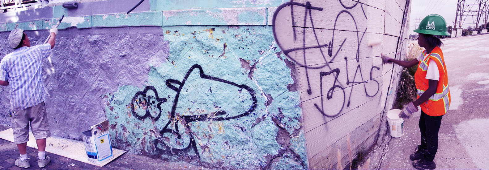

CheckUser Workflow and Tool Improvements
CheckUser is a critical tool for moderators in anti-vandalism efforts on Wikipedia. This research surfaces the pain points in the CheckUser workflow and opportunities to improve the tool.
Overview
Moderators face significant challenges when using the CheckUser tool. For instance, users of the tool report there is a high technical learning curve; one needs to have good working knowledge of how IP addresses and ranges work in order to determine if two user accounts are socks. Other issues with the tool turn relatively simple tasks into lengthy and cumbersome processes thereby rendering the act of moderation burdensome for Wikipedia volunteers. This research details the workflow of volunteer moderators, also known as Stewards, surfaces the pain points in the CheckUser workflow and presents opportunities to improve the tool.